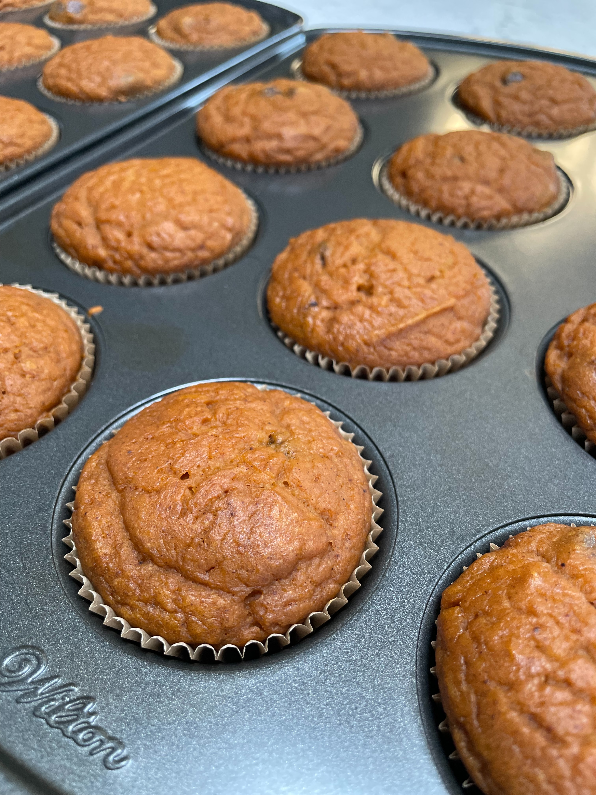

Home
Pumpkin Chocolate Chip Protein Muffins

Our family's favorite pumpkin muffins
In our house, muffins are a favorite breakfast and snack item, especially in the fall and winter. I developed this recipe to include more protein, while maintaining that high moisture level the pumpkin brings. High quality pumpkin and lots of spices bring out the seasonal yumminess!
Dry Ingredients
- 2 1/2 c all purpose flour
- 2 t baking soda
- 4 t cinnamon
- 1/2 t nutmeg
- 1/4 t cloves
- 1 1/2 t salt
Wet Ingredients
- 4 large eggs
- 4 T collagen
- 1/2 c sugar
- 1/2 c brown sugar
- 29oz can pumpkin puree
- 1/2 c applesauce
- 1/2 c avocado oil
- 1/2 c orange juice
Yummy Extras
- 1 c chocolate chips
Steps
- Preheat oven to 350F
- Spray muffin tins
- Whisk together dry ingredients
- Whisk together wet ingredients
- Mix together wet and dry ingredients
- Stir in chocolate chips
- Fill muffin cups 3/4 full
- Bake 12-15 mins and test for doneness